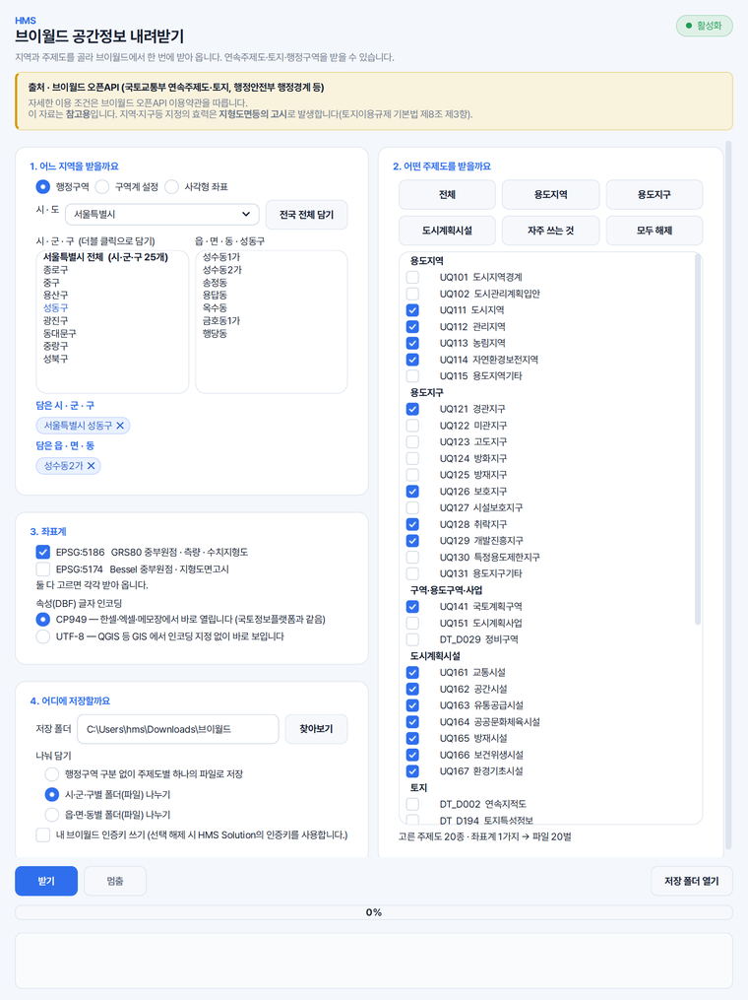

용도지역 SHP 를 한꺼번에 받을 때
용도지역 · 용도지구 · 도시계획시설을 한 화면에서 골라 함께 받습니다. [자주 쓰는 것] 단추를 누르시면 실무에서 늘 함께 보는 20종이 한 번에 골라집니다.
HMS 브이월드는 한 종류씩 신청해 받던 공간정보를 여러 개 골라, 시·군·구 단위나 대상지 범위에 맞춰 한 폴더에 한꺼번에 받습니다.
시·군·구와 읍·면·동을 고르거나, 구역계 파일이나 사각형 좌표 네 개로 받을 범위를 정합니다.
좌표계(.prj) · 글자 방식(.cpg) 파일과, 칸마다 뜻을 적은 설명 엑셀이 함께 저장됩니다.
용도지역 · 용도지구 · 도시계획시설을 한 화면에서 골라 함께 받습니다. [자주 쓰는 것] 단추를 누르시면 실무에서 늘 함께 보는 20종이 한 번에 골라집니다.
구역계 SHP 나 도면에서 뽑은 DXF 를 넣으시면 그 범위에 걸치는 것만 받습니다. 경계에 걸친 것이 잘리지 않도록 주변 1km · 5km 까지 넓혀 받으실 수도 있습니다.
필지마다 한 줄인 토지 자료도 같은 화면에서 받습니다. 양이 많아 오래 걸리는 자료를 고르시면 받기 전에 미리 알려 드립니다.
시·도 · 시·군·구 · 읍·면·동 행정경계와 법정동 경계를 받습니다. 시·군·구 목록 맨 위의 '전체' 칸을 담으시면 시·도 하나를 한꺼번에 받으실 수 있습니다.
표준분류코드가 있는 자료에는 '코드' · '코드명' 칸을 더해 담습니다. 저장해 두신 QGIS 스타일 파일을 받은 파일에 바로 불러 쓰실 수 있습니다.
행정구역 · 구역계 · 사각형 좌표 가운데 고릅니다. 읍·면·동을 고르지 않으면 시·군·구 전체를 받습니다.
[용도지역] · [자주 쓰는 것] 같은 단추로 한 번에 고르시거나, 목록에서 하나씩 고르십니다.
좌표계는 EPSG:5186 과 5174 가운데 고르거나 둘 다 받고, 속성 글자는 CP949 와 UTF-8 가운데 고릅니다.
고르신 폴더 안에 지역 이름과 날짜로 된 폴더가 새로 만들어지고, 받는 동안의 상황은 진행 상황 칸에 쌓입니다.
HMS V-World Downloader bulk-downloads zoning and other thematic maps from VWorld, Korea's national open spatial data platform, along with the continuous cadastral map and administrative boundaries, and saves them as shapefiles in one folder. You can limit the area to an administrative district or to the boundary of your project site, and receive the files in EPSG:5186, EPSG:5174 or both. It runs on Windows, and its screens are in Korean.
가상의 사업지(성수2지구 지구단위계획) 일대를 받을 지역으로 골라 찍은 화면입니다. 예전 화면이라 단추와 배치가 지금과 조금 다릅니다.

네. 받으실 주제도를 목록에서 여러 개 골라 [받기]를 한 번 누르시면, 고르신 것을 한 폴더에 모아 저장합니다.
표준분류코드가 있는 자료에는 코드와 코드명이 채워져 있어, 코드를 따로 입력하지 않으셔도 됩니다. 칸 이름과 뜻은 함께 저장되는 설명 엑셀에서 보실 수 있습니다.
EPSG:5186(GRS80 중부원점)과 EPSG:5174(베셀 중부원점) 가운데 고르시거나 둘 다 받으실 수 있습니다. EPSG:5174 는 국토정보플랫폼 배포본과 같은 방식으로 옮겨 담으므로, 그 파일과 위치가 맞습니다.
시·군 하나에 20~30초쯤입니다. 연속지적도 · 토지특성정보처럼 필지마다 한 줄인 자료는 15분 넘게 걸리기도 하며, 도중에 끊기면 [이어서 받기]로 남은 것만 받으실 수 있습니다.
받으시는 자료는 측량으로 정한 실제 경계와 다를 수 있습니다. 계획 검토나 위치 확인 같은 참고용으로 활용하시고, 경계와 면적을 확정하는 일에는 사용하지 않으시기를 권장드립니다.
화면을 그대로 담아 번호를 붙였습니다. 처음 쓰시는 분이 순서대로 따라오시면 됩니다.
솔루션을 하나씩 받지 않습니다. Solution Center 를 한 번 설치하면 그 안에서 골라 설치합니다.
파이썬 같은 실행환경까지 함께 들어 있어, 쓰시는 컴퓨터에 따로 준비하실 것이 없습니다.
소속은 회사명 · 학교명 · 기관명을 정확히 적어 주셔야 승인됩니다.
내려받기부터 설치까지 한 번에 끝납니다. 새 버전이 나오면 카드가 알려 줍니다.
쓰시다가 막히면 화면을 캡처해 카카오톡 오픈채팅이나 메일로 보내 주세요. 오류 창이 떴다면 그 창까지 함께 담아 주시면 가장 빠릅니다. 문의하는 곳은 홈페이지 문의 칸에 모아 두었습니다.
모두 같은 Solution Center 안에서 골라 설치합니다.